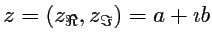
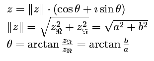
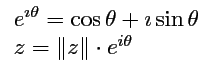
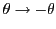

In this documnet i will use three different definitions of a complex number, that is :
- algebraic form of complex number
- 
- geometric representation of complex number
- 
- Euler's exponential form of complex number
- 
Appart of all elementary mathematical operations (that it addition, substraction, division, multiplication which are elementary) i will now show how calculate most of elementary functions (like trigonometric functions, logarithms etc.) with complex arguments. In this document i will use some well known mathematical realations, that is Euler's formulas
and their analogy for real
Now you can do some math transformation to get what we want...
first, complex exponential of complex number
complex natural logarithm of complex number
complex logarithm (any base) of complex number
using eq.1 and eq.2 for complex argument we can obtain
and
and also
and by setting  in above equations, we get hyperbolical functions for complex arguments
using trigonometrical realtions for sine and cosine we can get sine and cosine for complex arguments
and
and also tangent function
in next step we will get hyperbolic trigonometry functions, using some well known realations (similar to those used previously). hyperbolic sine
further we get hyperbolic cosine
and also hyperbolic tangent
in next section we will show complex power functions. where are three different ways to evaluate power functions in complex plane, we get one way for complex number to the integer power (de Moivre relation), other for complex number to the real power and quite similar complex number to the complex number. complex number to integer power (de Moivre)
complex number to real power
complex number to complex power
The last case is when we want to calculate integer (or real) number to the complex power
thats all for now...
2006 (c) by http://devblog.malczak.info